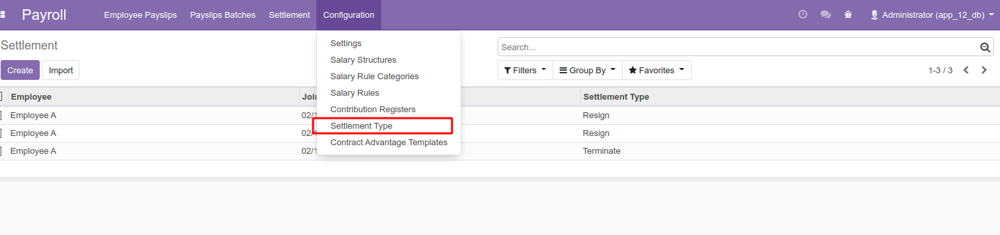
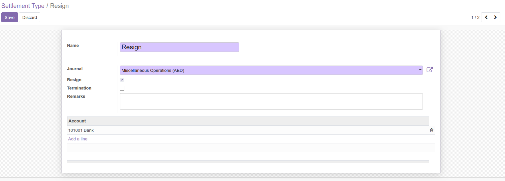
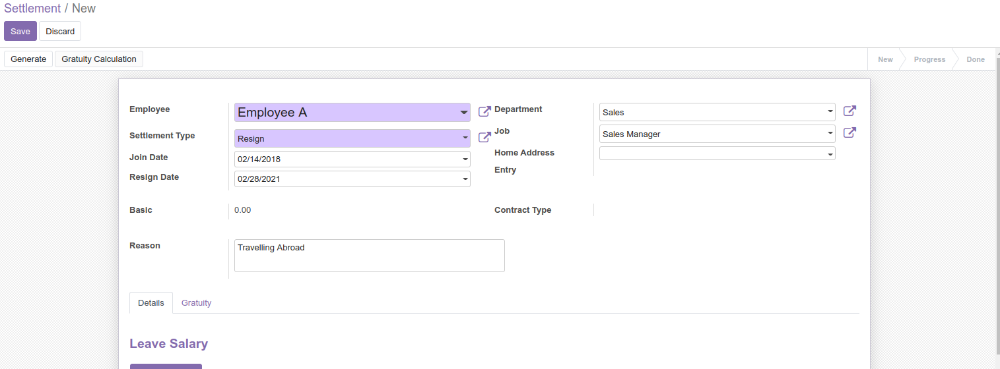
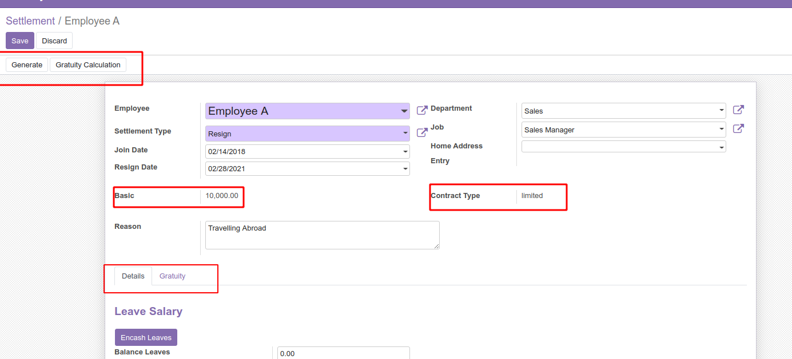
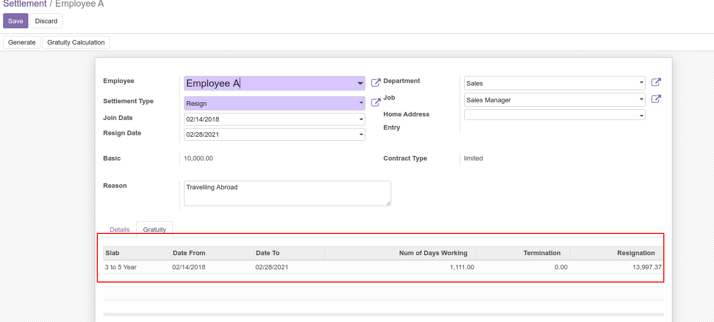
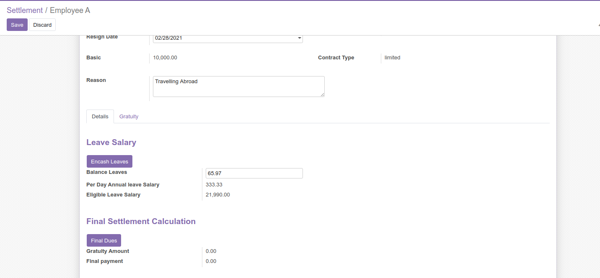
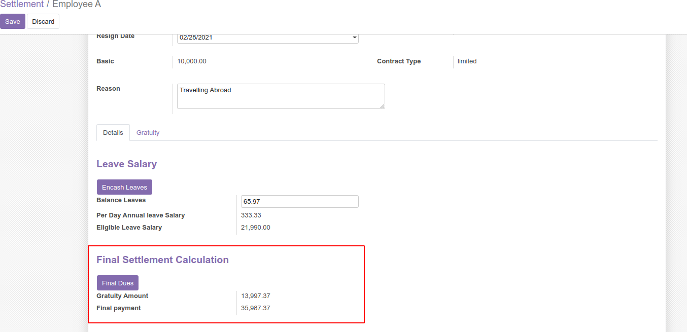

HOW TO USE THIS MODULE

After installing the module in the configuration you can see a menu named Settlement
Type in order to configure the settlement types.

Settlement type can be resign or termination. Select the corresponding journal, and select the resign
checkbox if settlement type is resignation, or else select the termination checkbox in case the settlement type is termination.
.

After installing this module, Settlement menu will be appeared in the Payroll Module and a Settlement form can be viewed. Once you select the Employee,
all relevant details such as Department, Job position, address , Joining Date will come automatically. You need to enter the settlement type whether
its Termination or Resignation along with the date of leaving. Also you can specify the reason for leaving.
.

In the top of form two buttons Generate and Gratuity Calculation can be seen, Clicking on generate will provide the basic salary and contract type details of the employee.
There are two tabs Details and Gratuity

By selecting the Gratuity Calculation button Gratuity is calculated based on UAE Laws.
Calculation For Limited Contract
- Less than one year : Employee is not entitled for any gratuity pay.
- Between 1 and 5 years of service : Employee is entitled to full gratuity pay
based on 21 days salary for each year of work.
- 5 or more year of service: Employee is entitled to full gratuity pay based
on 30 days salary for each year of work.
Calculation For Unlimited Contract
- Less than one year : Employee is not entitled for any gratuity pay.
- Between 1 and 3 years of service : Employee is entitled to one third of 21 days gratuity pay.
- Between 3 and 5 years of service : Employee is entitled to two thirds of 21 days gratuity pay.
- 5 or more years of service : Employee is entitled to full 21 days gratuity pay for each year of service.
Gratuity is calculated automatically based on employees years of experience and the contract type which makes the work of HR more easier and Fast.

Leave Salary is also another important factor for the final Settlement, If the employee has remaining annual leaves. If he has not used those leaves,
then it should be en-cashed. By clicking on En-cash leaves leave salary get calculated.
- Balance Leave : Here you need to enter the remaining leaves available for the employee.
- Per Day Annual leave salary : Per Day annual leave salary is calculated based on
(basic salary + Allowances) /30 to get per day annual leave salary.
- Eligible Leave salary : Eligible Leave Salary will be the (Balance leaves * Per Day Annual Leave Salary)

Finally, Final Settlement Calculation will show the Gratuity amount and the Final Payment will be calculated based on the total sum
of Gratuity amount along with Eligible Leave Salary amount.